Die Alkane – Prüfungstraining Chemie (Klasse 10)

Die Niere – Prüfungstraining Biologie (Klasse 8)

Der Druck – Prüfungstraining Physik (Klasse 8)
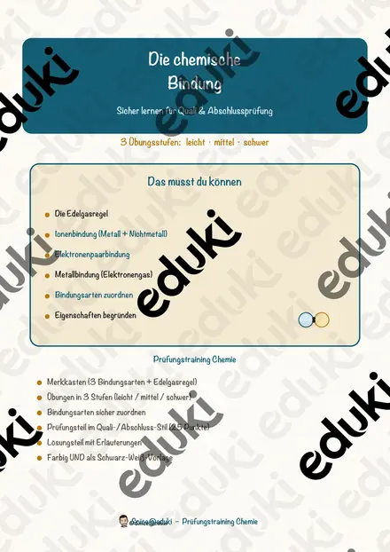
Die chemische Bindung – Prüfungstraining Chemie (Klasse 9)

Das Gradnetz der Erde – Prüfungstraining Erdkunde (Klasse 8)

Der Rechtsstaat – Prüfungstraining Sozialkunde (Klasse 9)

Die Kreuzzüge – Prüfungstraining Geschichte (Klasse 8)
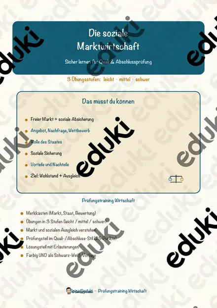
Die soziale Marktwirtschaft – Prüfungstraining Wirtschaft (Klasse 9)
Die Bevölkerungsentwicklung – Prüfungstraining Erdkunde (Klasse 9)

Der Föderalismus – Prüfungstraining Sozialkunde (Klasse 9)

Die Zähne – Prüfungstraining Biologie (Klasse 8)

Die Vererbung – Prüfungstraining Biologie (Klasse 9)

Die Zelle – Prüfungstraining Biologie (Klasse 8)

Das Immunsystem – Prüfungstraining Biologie (Klasse 9)

Die Muskeln – Prüfungstraining Biologie (Klasse 8)

Das Skelett – Prüfungstraining Biologie (Klasse 8)

Die Atmung – Prüfungstraining Biologie (Klasse 8)

Die Verdauung – Prüfungstraining Biologie (Klasse 8)

Das Ohr – Prüfungstraining Biologie (Klasse 8)

Das Auge – Prüfungstraining Biologie (Klasse 8)

Die Verbrennung – Prüfungstraining Chemie (Klasse 8)
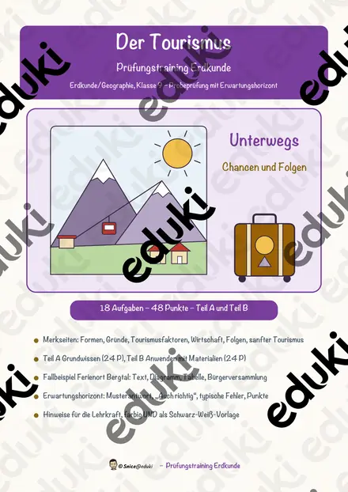
Der Tourismus – Prüfungstraining Erdkunde (Klasse 9)

Die Kinderrechte – Prüfungstraining Sozialkunde (Klasse 8)

Die Aufklärung – Prüfungstraining Geschichte (Klasse 8)
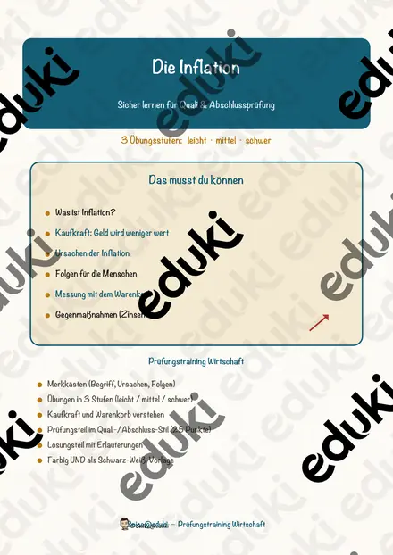
Die Inflation – Prüfungstraining Wirtschaft (Klasse 9)

Der Elektromotor – Prüfungstraining Physik (Klasse 9)

Die Zellatmung – Prüfungstraining Biologie (Klasse 9)

Die Charakterisierung – Prüfungstraining Deutsch (Klasse 8)

Die Geschwindigkeit – Prüfungstraining Physik (Klasse 8)

Prisma und Zylinder – Prüfungstraining Mathematik (Klasse 9)

Die Weimarer Republik – Prüfungstraining Geschichte (Klasse 9)
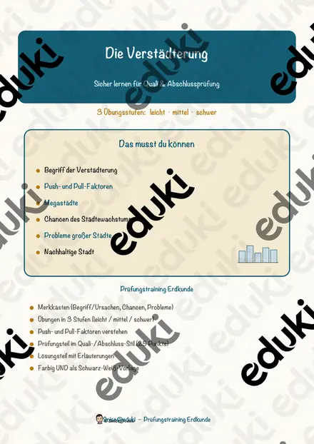
Die Verstädterung – Prüfungstraining Erdkunde (Klasse 9)
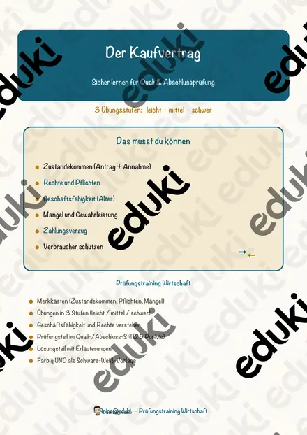
Der Kaufvertrag – Prüfungstraining Wirtschaft (Klasse 9)

Die Radioaktivität – Prüfungstraining Physik (Klasse 9)

Die Kreisberechnung – Prüfungstraining Mathematik (Klasse 8)

Quadratische Funktionen – Prüfungstraining Mathematik (Klasse 9)

Der Umweltschutz – Prüfungstraining Biologie (Klasse 8)

Die Ballade – Prüfungstraining Deutsch (Klasse 8)

Der Imperialismus – Prüfungstraining Geschichte (Klasse 9)

Die Plattentektonik – Prüfungstraining Erdkunde (Klasse 8)
Die Sozialversicherung – Prüfungstraining Sozialkunde (Klasse 9)
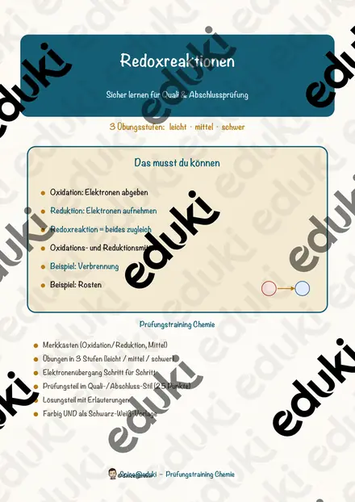
Redoxreaktionen – Prüfungstraining Chemie (Klasse 9)

Der Absolutismus – Prüfungstraining Geschichte (Klasse 8)

Die Vereinten Nationen – Prüfungstraining Sozialkunde (Klasse 9)

Die Kurzgeschichte – Prüfungstraining Deutsch (Klasse 9)

Das Hormonsystem – Prüfungstraining Biologie (Klasse 9)
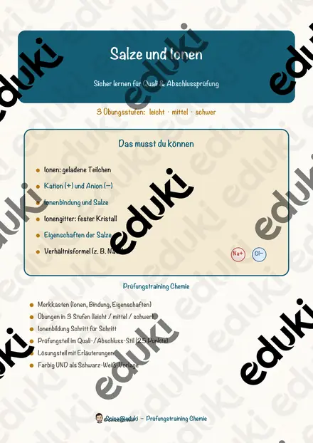
Salze und Ionen – Prüfungstraining Chemie (Klasse 9)
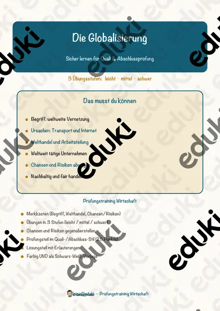
Die Globalisierung – Prüfungstraining Wirtschaft (Klasse 10)

Die Europäische Union – Prüfungstraining Sozialkunde (Klasse 9)
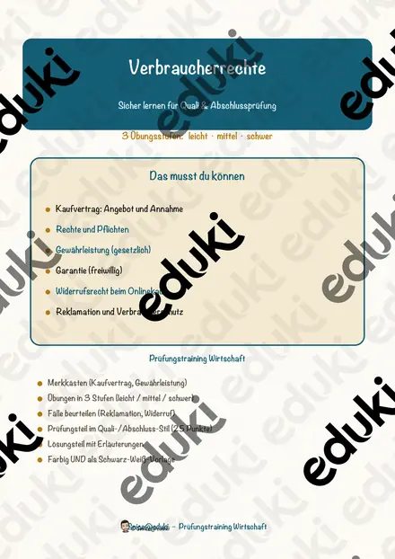
Verbraucherrechte – Prüfungstraining Wirtschaft (Klasse 9)

Die Landwirtschaft – Prüfungstraining Erdkunde (Klasse 8)

Die Fabel – Prüfungstraining Deutsch (Klasse 8)

Der Stromkreis – Prüfungstraining Physik (Klasse 8)

Groß- und Kleinschreibung – Prüfungstraining Deutsch (Klasse 8)
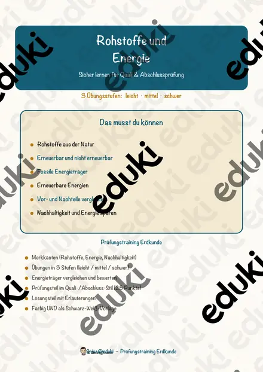
Rohstoffe und Energie – Prüfungstraining Erdkunde (Klasse 9)

Die Luft – Prüfungstraining Chemie (Klasse 8)
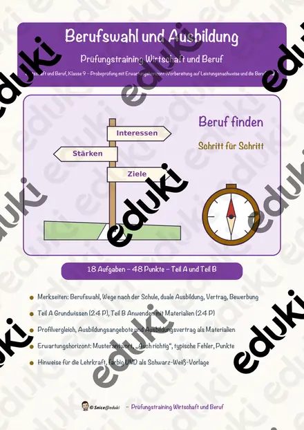
Berufswahl und Ausbildung – Prüfungstraining Wirtschaft (Klasse 9)

Das Wasser – Prüfungstraining Chemie (Klasse 8)

Die Medien – Prüfungstraining Sozialkunde (Klasse 9)

Wärme und Temperatur – Prüfungstraining Physik (Klasse 8)

Ernährung und Nährstoffe – Prüfungstraining Biologie (Klasse 8)

Die Zeitformen – Prüfungstraining Deutsch (Klasse 8)

Die Menschenrechte – Prüfungstraining Sozialkunde (Klasse 9)

Der Schall – Prüfungstraining Physik (Klasse 8)
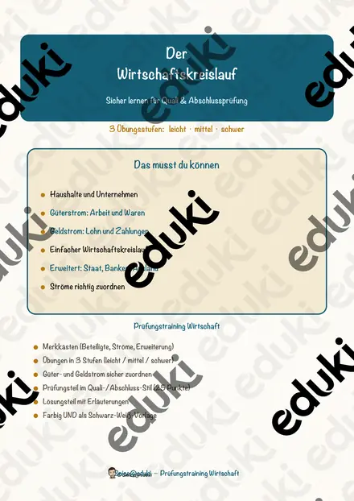
Der Wirtschaftskreislauf – Prüfungstraining Wirtschaft (Klasse 9)

Die Satzglieder – Prüfungstraining Deutsch (Klasse 8)

Das Blut – Prüfungstraining Biologie (Klasse 9)

Die Wortarten – Prüfungstraining Deutsch (Klasse 8)
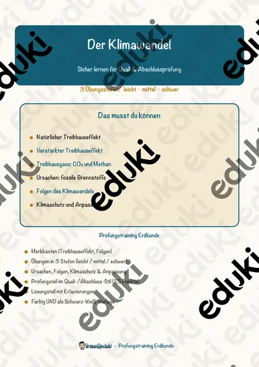
Der Klimawandel – Prüfungstraining Erdkunde (Klasse 9)

Bruchrechnung – Prüfungstraining Mathematik (Klasse 8)

Metalle und ihre Eigenschaften – Prüfungstraining Chemie (Klasse 8)

Der Hebel – Prüfungstraining Physik (Klasse 8)

Aktiv und Passiv – Prüfungstraining Deutsch (Klasse 8)

Die Wirtschaftssektoren – Prüfungstraining Erdkunde (Klasse 8)

Oxidation und Verbrennung – Prüfungstraining Chemie (Klasse 8)
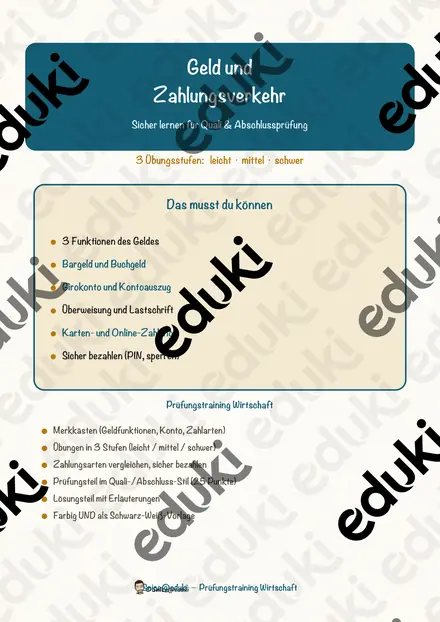
Geld und Zahlungsverkehr – Prüfungstraining Wirtschaft (Klasse 9)
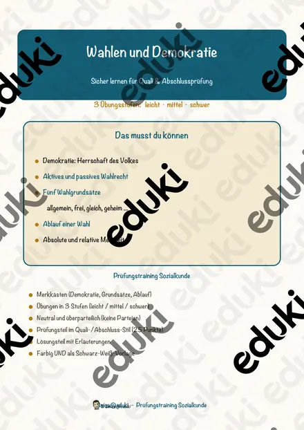
Wahlen und Demokratie – Prüfungstraining Sozialkunde (Klasse 9)

Potenzen und Wurzeln – Prüfungstraining Mathematik (Klasse 9)

Kräfte – Prüfungstraining Physik (Klasse 8)

Der Kalte Krieg – Prüfungstraining Geschichte (Klasse 10)

Lineare Gleichungssysteme – Prüfungstraining Mathematik (Klasse 9)

Die Evolution – Prüfungstraining Biologie (Klasse 9)

Die Kommasetzung – Prüfungstraining Deutsch (Klasse 8)

Dichte – Prüfungstraining Physik (Klasse 8)

Stoffgemische und Trennverfahren – Prüfungstraining Chemie (Klasse 8)

Vulkane und Erdbeben – Prüfungstraining Erdkunde (Klasse 8)

Binomische Formeln – Prüfungstraining Mathematik (Klasse 8)

Magnetismus – Prüfungstraining Physik (Klasse 8)

Der Erste Weltkrieg – Prüfungstraining Geschichte (Klasse 9)

Konsum und Werbung – Prüfungstraining Wirtschaft (Klasse 8)

Das Herz – Prüfungstraining Biologie (Klasse 8)

Die Französische Revolution – Prüfungstraining Geschichte (Klasse 8)

Die Vorgangsbeschreibung – Prüfungstraining Deutsch (Klasse 8)

Die Aggregatzustände – Prüfungstraining Physik (Klasse 8)

Der Bericht – Prüfungstraining Deutsch (Klasse 8)

Atombau und Periodensystem – Prüfungstraining Chemie (Klasse 8)

Die Klimazonen der Erde – Prüfungstraining Erdkunde (Klasse 8)

Die Fotosynthese – Prüfungstraining Biologie (Klasse 8)

Optik – Licht und Sehen – Prüfungstraining Physik (Klasse 8)
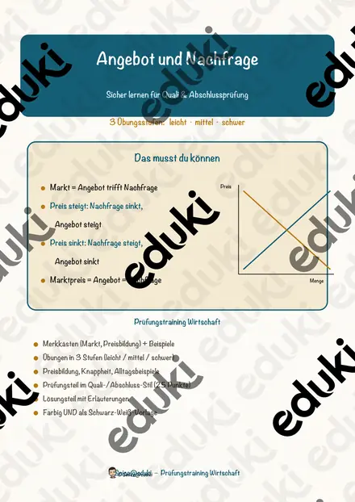
Angebot und Nachfrage – Prüfungstraining Wirtschaft (Klasse 9)

Das Ökosystem – Prüfungstraining Biologie (Klasse 8)

Die Industrialisierung – Prüfungstraining Geschichte (Klasse 8)

Statistik und Daten – Prüfungstraining Mathematik (Klasse 8)

Der Strahlensatz – Prüfungstraining Mathematik (Klasse 9)

Die Sachtextanalyse – Prüfungstraining Deutsch (Klasse 9)

Das Grundgesetz und die Grundrechte – Prüfungstraining Sozialkunde (Klasse 9)
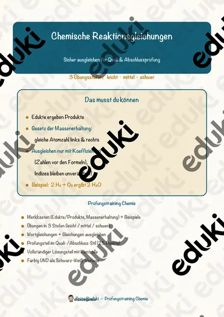
Chemische Reaktionsgleichungen – Prüfungstraining Chemie (Klasse 9)

Trigonometrie – Prüfungstraining Mathematik (Klasse 9)

Energie und Arbeit – Prüfungstraining Physik (Klasse 9)
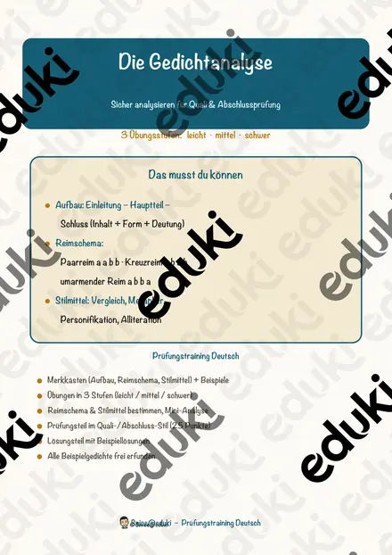
Die Gedichtanalyse – Prüfungstraining Deutsch (Klasse 9)
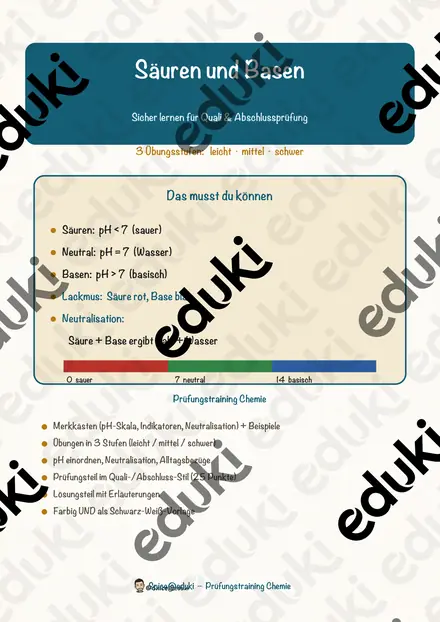
Säuren und Basen – Prüfungstraining Chemie (Klasse 9)

Quadratische Gleichungen – Prüfungstraining Mathematik (Klasse 9)

Das Ohmsche Gesetz – Prüfungstraining Physik (Klasse 9)

Die Erörterung – Prüfungstraining Deutsch (Klasse 9)

Die Inhaltsangabe – Prüfungstraining Deutsch (Klasse 8)

Wahrscheinlichkeit – Prüfungstraining Mathematik (Klasse 8)

Flächen und Körper – Prüfungstraining Mathematik (Klasse 8)

Lineare Funktionen – Prüfungstraining Mathematik (Klasse 9)

Dreisatz und Zuordnungen – Prüfungstraining Mathematik (Klasse 8)

Terme und Gleichungen – Prüfungstraining Mathematik (Klasse 8)

Satz des Pythagoras – Prüfungstraining Mathematik (Klasse 9)

Prozent- und Zinsrechnung – Prüfungstraining Mathematik (Klasse 9)
Keine Materialien gefunden – versuch einen anderen Suchbegriff oder Filter.
Was ein Prüfungstraining enthält
Jedes Paket bündelt ein Lehrplanthema in drei Teilen: eine kompakte Zusammenfassung der Inhalte, Übungsaufgaben im Format der Abschlussprüfung und ausführliche Musterlösungen. Die Aufgabenstellungen greifen die Operatoren auf, die in Prüfungen tatsächlich verwendet werden.
Die Zusammenfassung ist bewusst knapp gehalten. Sie ersetzt kein Schulbuch, sondern gibt der Klasse das Gerüst, an dem sie beim Wiederholen entlanggeht.
Wie du damit arbeitest
Bewährt hat sich der Dreischritt: Zusammenfassung lesen lassen, Aufgaben in Einzelarbeit bearbeiten, anschließend mit der Musterlösung vergleichen. Weil die Lösungen den Weg und die Begründung zeigen, können Schülerinnen und Schüler ihre Fehler selbst einordnen.
Für die Wochen vor einer Prüfung lässt sich jedes Paket auch als Hausaufgabenpaket ausgeben.
Häufige Fragen
Für welche Jahrgangsstufen sind die Trainings gedacht?
Der Schwerpunkt liegt auf den Klassen 8 bis 10, also auf der Vorbereitung von Schulaufgaben, Klassenarbeiten und Abschlussprüfungen.
Sind Lösungen enthalten?
Ja, zu jeder Aufgabe gibt es eine ausführliche Musterlösung mit Lösungsweg.
Passen die Materialien zum Lehrplan meines Bundeslandes?
Die Themen orientieren sich an Inhalten, die in allen Bundesländern zum Kernbereich gehören. Formulierungen und Aufgabenformate sind bewusst bundeslandneutral gehalten.